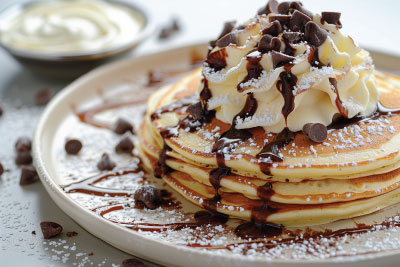

Peanut Butter Pancakes studded with chocolate chips!

Ingredients
1 cup all-purpose flour
¼ cup sugar
1 ½ tsp baking powder
¼ tsp salt
½ cup creamy peanut butter (This yields lighter and fluffier pancakes. For thick, dense pancakes you may increase to ⅔ cup)
1 tsp vanilla extract
1 egg lightly beaten
1 cup milk
½ cup semi-sweet chocolate chips
Optional Toppings
Chocolate syrup
Whipped cream
⅓ cup peanut butter (melted for 12-20 seconds)
Steps
In medium-sized bowl, whisk together flour, sugar, baking powder and salt.
In larger, microwave-safe bowl, microwave peanut butter for 15 seconds. Remove from microwave, stir in vanilla, and then stir in lightly beaten egg, until combined.
Stir in milk until ingredients are combined (the peanut butter may be clumped and streaky, try to whisk until ingredients are well combined, but some streaks are OK).
Pour dry ingredients into wet ingredients and stir once or twice. Add chocolate chips.
Continue to stir until just combined (there may still be a few flour clumps, this is OK but do not overmix the batter)
Lightly spray a nonstick pan with cooking spray and heat over medium-low heat.
Once pan is heated, pour about ¼-⅓ cup batter into pan in circle to form pancake. The batter is a bit thick so use a knife or the back of a spoon to nudge some of the batter from the center and into the edges so that the pancake is even and not bulky in the center.
Cook several minutes, until edges begin to bubble and appear cooked, and then flip and cook the rest of the way through.
Transfer to plate and serve immediately, preferably topped with chocolate syrup, slightly melted peanut butter, and whipped topping.